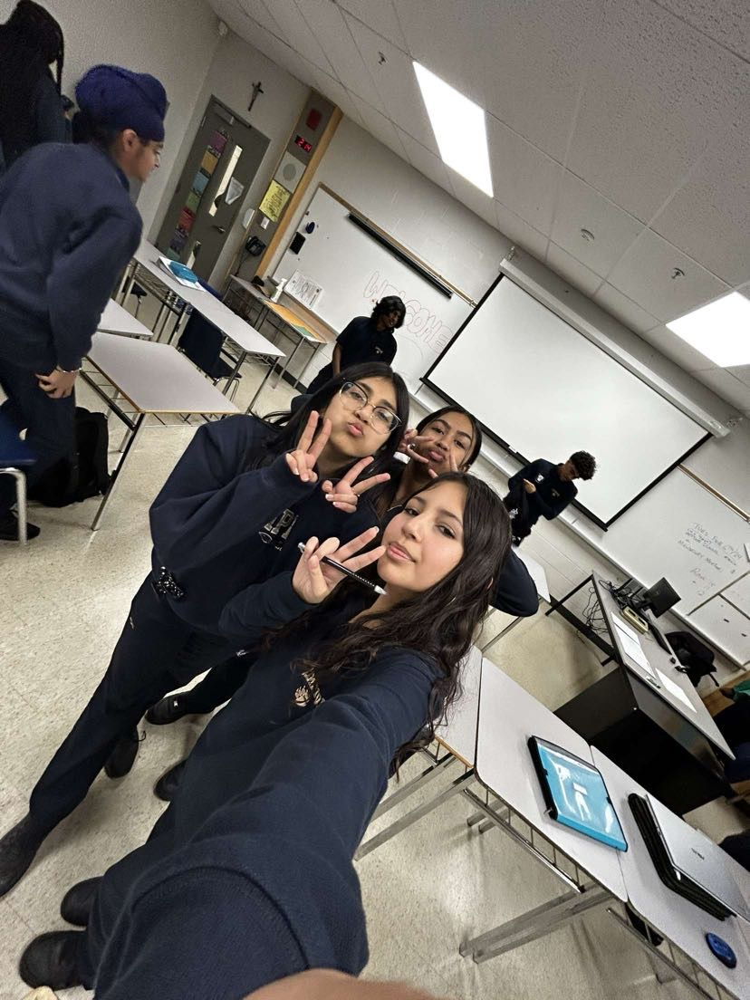

In this webpage,
I will present to you all of the skills
I have learned in this course.
First, some things about myself;
I am a grade 9 student at St.Edmund Campion.
My hobbies include things like playing sports, listening to music and more teen hobbies.
I work well with others and I enjoy working on projects.
I am responsible, intuitive and a good thinker.
In the short time I spent in my business class, I met many amazing friends.
I enjoyed learning together with these people.
Learning useful things such as spreadsheet and coding skills
will forever be something I am going to use in life.

My Skills(Resume and Cover Letter)
Artifacts/Pieces of work
All 7 of these artifacts are my best pieces of work, where I performed the best in this course.
They showcase my skills as a grade 9 in the BTT101 course.
The artifacts range from skills such as spreadsheets, presentations, letters and more!
I hope these pieces of my work help to make me stand out for this position.
Special thanks to Ms.Williams-Harvey for everything
she has taught me in my grade 9 BTT101 course. All the credit goes
to her for my skills.